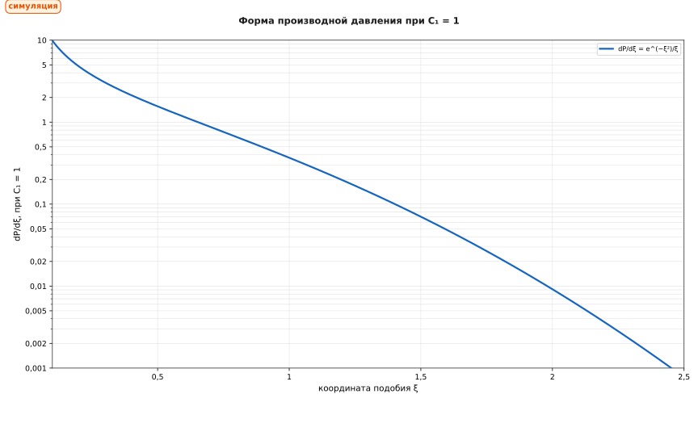

Стр. 489 · 5.2. Плоскорадиальный фильтрационный поток упругой жидкости. Основная формула теории упругого режима фильтрации
Воспользуемся подстановкой
Неустановившееся движение упругой жидкости в упругом пласте. Метод ПСССШаг 34 из 60
В книге: «Плоскорадиальный фильтрационный поток упругой жидкости. Основная формула теории упругого режима фильтрации» стр. 489–490
Опирается на: шаг 33 «Уравнение с одной переменной вместо двух» (предпосылка), шаг 19 «От уравнения к наклону профиля» (предпосылка)
Производную давления обозначают отдельной буквой v, и порядок уравнения понижается.
После разделения переменных и интегрирования получается dP/dξ = C₁·e^(−ξ²)/ξ.
Постоянная C₁ пока неизвестна: её найдут из условий задачи.
Пороговая идея. Производную давления можно сначала найти как отдельную неизвестную. модель
В уравнение входят только первая производная dP/dξ и её производная. Автор обозначает dP/dξ = v. Получается уравнение первого порядка: dv/dξ + (1/ξ + 2ξ)·v = 0. стр. 489
«$$\frac{dv}{d\xi} + \left( \frac{1}{\xi} + 2\xi \right) v = 0,$$»
Уравнение приводят к виду с разделёнными переменными (23.46): dξ/ξ + dv/v = −2ξ·dξ. Теперь каждую часть можно интегрировать отдельно. стр. 490
«$$\frac{d\xi}{\xi} + \frac{dv}{v} = -2\xi d\xi. \quad (23.46)$$»
После интегрирования появляются логарифмы и постоянная интегрирования C₁. По (23.47) ln ξ + ln v = −ξ² + ln C₁. стр. 490
«$$\ln \xi + \ln v = -\xi^2 + \ln C_1, \quad (23.47)$$»
Затем выполняют потенцирование — переход от логарифмов к самим величинам. Получается (23.48): v = dP/dξ = C₁·e^(−ξ²)/ξ. Производная равна экспоненте, делённой на ξ, с постоянным множителем. стр. 490
«$$v = \frac{dP}{d\xi} = C_1 \frac{e^{-\xi^2}}{\xi}. \quad (23.48)$$»

После этого шага известна только форма производной. Постоянная C₁ ещё не найдена. Распределения давления пока нет: нужны условия задачи. стр. 490
Как найти производную давления
Ввод вспомогательной переменной для производной. стр. 489
| Обозначение | Что это | Единицы |
|---|---|---|
| $P$ | давление, делённое на начальное | безразмерное |
| $\xi$ | автомодельная координата | безразмерная |
| $v$ | производная безразмерного давления по автомодельной координате | безразмерная |
Уравнение первого порядка для вспомогательной переменной. стр. 489
| Обозначение | Что это | Единицы |
|---|---|---|
| $v$ | производная безразмерного давления по автомодельной координате | безразмерная |
| $\xi$ | автомодельная координата | безразмерная |
Форма с разделёнными переменными. стр. 490
| Обозначение | Что это | Единицы |
|---|---|---|
| $\xi$ | автомодельная координата | безразмерная |
| $v$ | производная безразмерного давления по автомодельной координате | безразмерная |
Результат первого интегрирования. стр. 490
| Обозначение | Что это | Единицы |
|---|---|---|
| $\xi$ | автомодельная координата | безразмерная |
| $v$ | производная безразмерного давления по автомодельной координате | безразмерная |
| $C_1$ | постоянная интегрирования | безразмерная |
Производная безразмерного давления после снятия логарифма. стр. 490
| Обозначение | Что это | Единицы |
|---|---|---|
| $v$ | производная безразмерного давления по автомодельной координате | безразмерная |
| $P$ | давление, делённое на начальное | безразмерное |
| $\xi$ | автомодельная координата | безразмерная |
| $C_1$ | постоянная интегрирования | безразмерная |
Вводят вспомогательную функцию, разделяют переменные, интегрируют и переходят от логарифмов к исходной функции.
Разложить вычисление на промежуточную функцию и восстановление исходного результата.
Где аналогия перестаёт работать: Промежуточная функция связана с производной, а её множитель фиксируется физическим условием расхода.
Верный ответ: Производная пропорциональна e^(−ξ²)/ξ; В ответ входит постоянная интегрирования C₁; Это пока не распределение давления, а его производная
C₁ ещё предстоит найти из условий задачи. Где это в тексте (стр. 490) →
Расставьте шаги вычисления по порядку.
Перетащите пункты (мышью или пальцем за ⠿) или двигайте кнопками ↑ ↓.
Верный ответ: Обозначьте производную давления вспомогательной функцией v. → Разделите переменные. → Проинтегрируйте обе части. → Потенцируйте равенство и выразите производную давления.
Замена, разделение, интегрирование, снятие логарифма. Где это в тексте (стр. 490) →
Все утверждения шага с дословной цитатой автора и страницей книги (по PDF).
После замены производной на новую неизвестную порядок уравнения понижается. вывод
«$$\frac{dv}{d\xi} + \left( \frac{1}{\xi} + 2\xi \right) v = 0,$$»
Уравнение преобразуют к виду с разделёнными переменными. вывод
«$$\frac{d\xi}{\xi} + \frac{dv}{v} = -2\xi d\xi. \quad (23.46)$$»
При интегрировании появляются логарифмы и постоянная интегрирования. вывод
«$$\ln \xi + \ln v = -\xi^2 + \ln C_1, \quad (23.47)$$»
Переход от логарифмов даёт производную давления в виде экспоненты, делённой на координату подобия, с постоянным множителем. вывод
«$$v = \frac{dP}{d\xi} = C_1 \frac{e^{-\xi^2}}{\xi}. \quad (23.48)$$»
Стр. 489 · 5.2. Плоскорадиальный фильтрационный поток упругой жидкости. Основная формула теории упругого режима фильтрации
Воспользуемся подстановкой
Стр. 489 · 5.2. Плоскорадиальный фильтрационный поток упругой жидкости. Основная формула теории упругого режима фильтрации
$$\frac{dP}{d\xi} = v$$
Стр. 489 · 5.2. Плоскорадиальный фильтрационный поток упругой жидкости. Основная формула теории упругого режима фильтрации
и из уравнения (23.44) получим
Стр. 489 · 5.2. Плоскорадиальный фильтрационный поток упругой жидкости. Основная формула теории упругого режима фильтрации
$$\frac{dv}{d\xi} + \left( \frac{1}{\xi} + 2\xi \right) v = 0,$$
Стр. 490 · 5.2. Плоскорадиальный фильтрационный поток упругой жидкости. Основная формула теории упругого режима фильтрации
или
Стр. 490 · 5.2. Плоскорадиальный фильтрационный поток упругой жидкости. Основная формула теории упругого режима фильтрации
$$\frac{d\xi}{\xi} + \frac{dv}{v} = -2\xi d\xi. \quad (23.46)$$
Стр. 490 · 5.2. Плоскорадиальный фильтрационный поток упругой жидкости. Основная формула теории упругого режима фильтрации
Проинтегрировав (23.46), получим
Стр. 490 · 5.2. Плоскорадиальный фильтрационный поток упругой жидкости. Основная формула теории упругого режима фильтрации
$$\ln \xi + \ln v = -\xi^2 + \ln C_1, \quad (23.47)$$
Стр. 490 · 5.2. Плоскорадиальный фильтрационный поток упругой жидкости. Основная формула теории упругого режима фильтрации
где $C_1$ – постоянная интегрирования.
Стр. 490 · 5.2. Плоскорадиальный фильтрационный поток упругой жидкости. Основная формула теории упругого режима фильтрации
Потенцируя (23.47), найдем:
Стр. 490 · 5.2. Плоскорадиальный фильтрационный поток упругой жидкости. Основная формула теории упругого режима фильтрации
$$v = \frac{dP}{d\xi} = C_1 \frac{e^{-\xi^2}}{\xi}. \quad (23.48)$$
На этот шаг опираются: шаг 35 «Восстановить давление по двум условиям».
Сначала найти производную давления
Ссылки в ответе ведут к исходному тексту.